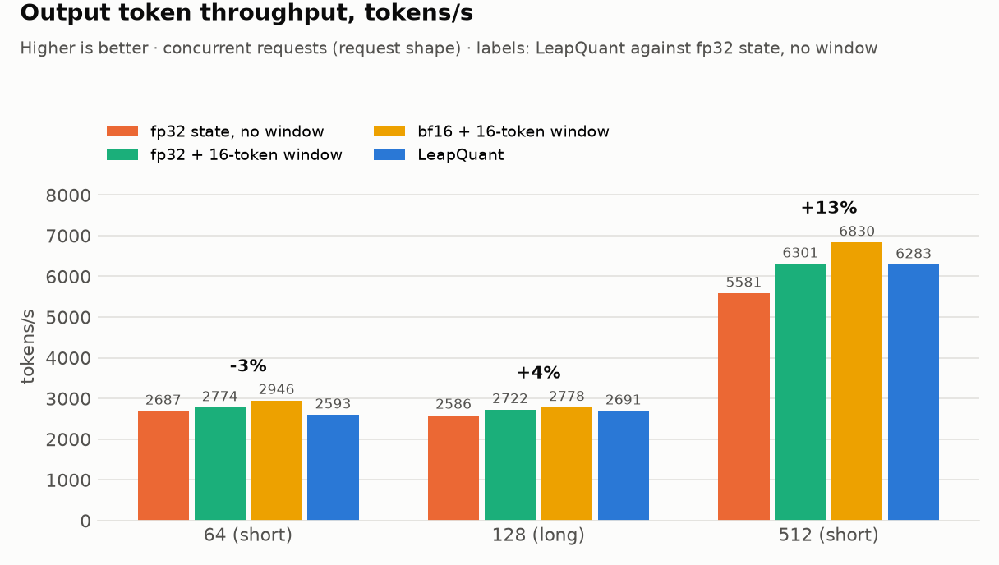
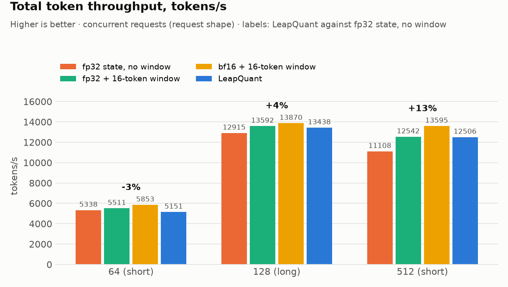
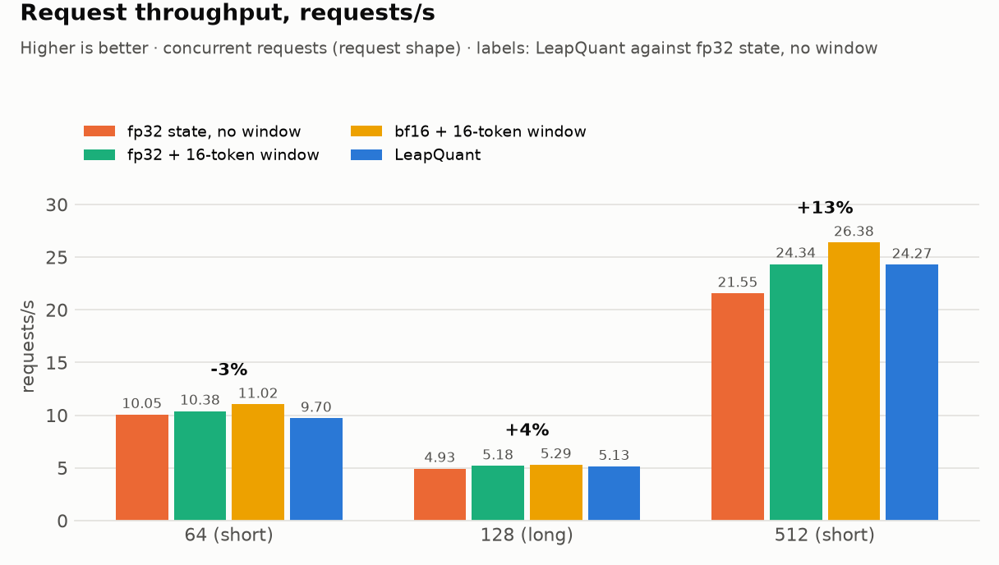
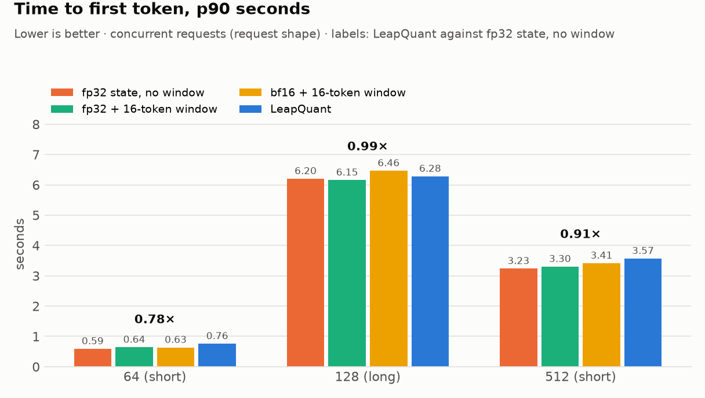
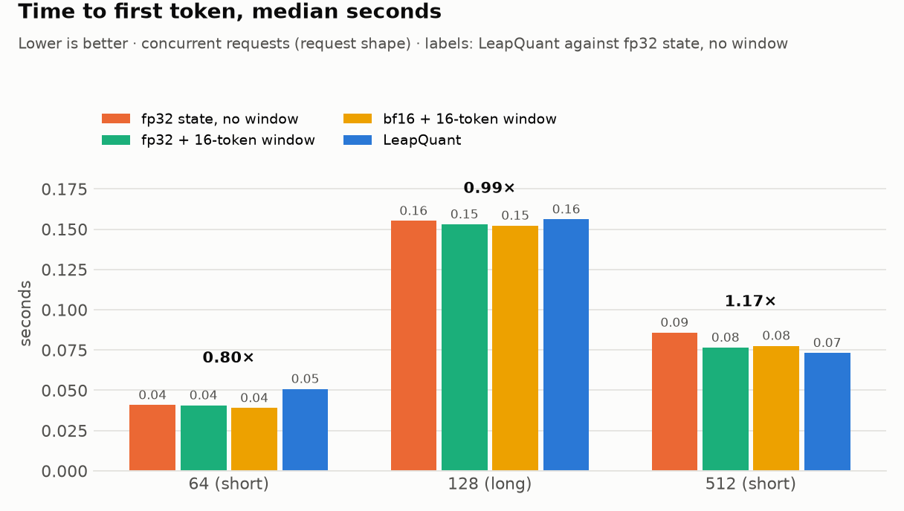
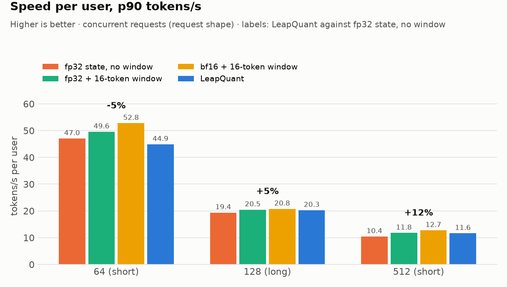
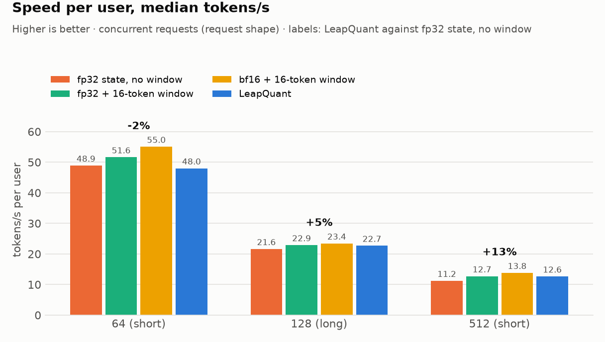
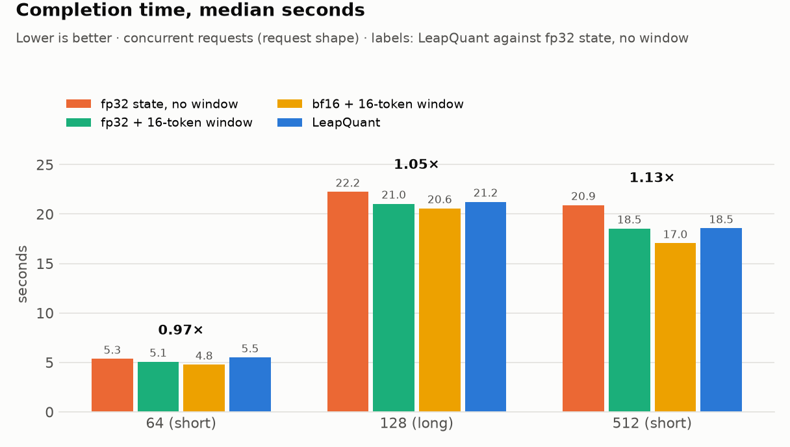
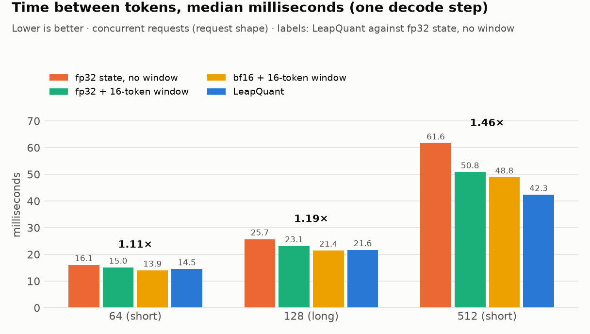
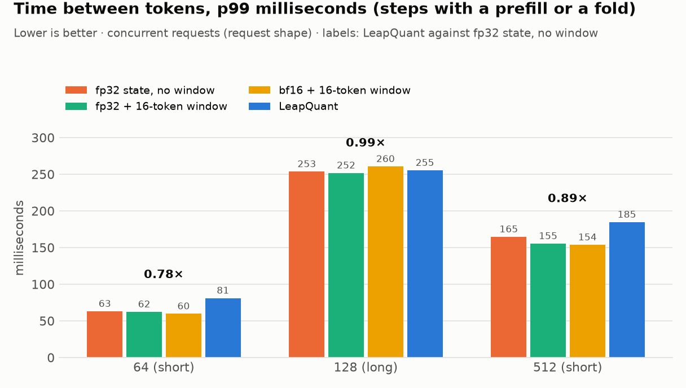

Serving: throughput, time to first token, speed per user
Qwen3.5-9B on one GPU, SGLang, at several numbers of concurrent requests. One chart and one table per metric, as in the benchmark reports this layout follows.
Sixth round (14 Nov 2026, H100 PCIe 80 GB): the fast LeapQuant kernels (Triton, tensor cores) and the compressed state (integration phase 2).
Every server: radix cache off, 560 state slots, at most 512 running requests, CUDA graphs up to batch 512, no overlap scheduling.
With the radix cache off SGLang runs as many requests as it has state slots, so concurrency 512 means 512 running requests.
config4 (LeapQuant): LEAPQUANT_STATE=compressed (no fp32 state per slot), fast kernels, folds aligned across requests.
Memory per server: fp32 state 26.3 GB and 495,468 KV tokens; bf16 state 13.2 GB and 926,316 KV tokens; LeapQuant 11.1 GB and 993,215 KV tokens.
The kernel page (e_triton_speed.txt) was measured after this serving round, with the decode step retuned (0.254 ms at batch 512 instead of 0.34 ms in the servers of this round).
Every server: radix cache off, 560 state slots, at most 512 running requests, CUDA graphs up to batch 512, no overlap scheduling.
With the radix cache off SGLang runs as many requests as it has state slots, so concurrency 512 means 512 running requests.
config4 (LeapQuant): LEAPQUANT_STATE=compressed (no fp32 state per slot), fast kernels, folds aligned across requests.
Memory per server: fp32 state 26.3 GB and 495,468 KV tokens; bf16 state 13.2 GB and 926,316 KV tokens; LeapQuant 11.1 GB and 993,215 KV tokens.
The kernel page (e_triton_speed.txt) was measured after this serving round, with the decode step retuned (0.254 ms at batch 512 instead of 0.34 ms in the servers of this round).
Output token throughput, tokens/s

| Concurrent requests | fp32 state, no window | fp32 + 16-token window | bf16 + 16-token window | LeapQuant | LeapQuant against fp32 state, no window |
|---|---|---|---|---|---|
| 64 (short) | 2687 | 2774 | 2946 | 2593 | -3% |
| 128 (long) | 2586 | 2722 | 2778 | 2691 | +4% |
| 512 (short) | 5581 | 6301 | 6830 | 6283 | +13% |
Total token throughput, tokens/s

| Concurrent requests | fp32 state, no window | fp32 + 16-token window | bf16 + 16-token window | LeapQuant | LeapQuant against fp32 state, no window |
|---|---|---|---|---|---|
| 64 (short) | 5338 | 5511 | 5853 | 5151 | -3% |
| 128 (long) | 12915 | 13592 | 13870 | 13438 | +4% |
| 512 (short) | 11108 | 12542 | 13595 | 12506 | +13% |
Request throughput, requests/s

| Concurrent requests | fp32 state, no window | fp32 + 16-token window | bf16 + 16-token window | LeapQuant | LeapQuant against fp32 state, no window |
|---|---|---|---|---|---|
| 64 (short) | 10.05 | 10.38 | 11.02 | 9.70 | -3% |
| 128 (long) | 4.93 | 5.18 | 5.29 | 5.13 | +4% |
| 512 (short) | 21.55 | 24.34 | 26.38 | 24.27 | +13% |
Time to first token, p90 seconds

| Concurrent requests | fp32 state, no window | fp32 + 16-token window | bf16 + 16-token window | LeapQuant | LeapQuant against fp32 state, no window |
|---|---|---|---|---|---|
| 64 (short) | 0.59 | 0.64 | 0.63 | 0.76 | 0.78× |
| 128 (long) | 6.20 | 6.15 | 6.46 | 6.28 | 0.99× |
| 512 (short) | 3.23 | 3.30 | 3.41 | 3.57 | 0.91× |
Time to first token, median seconds

| Concurrent requests | fp32 state, no window | fp32 + 16-token window | bf16 + 16-token window | LeapQuant | LeapQuant against fp32 state, no window |
|---|---|---|---|---|---|
| 64 (short) | 0.04 | 0.04 | 0.04 | 0.05 | 0.80× |
| 128 (long) | 0.16 | 0.15 | 0.15 | 0.16 | 0.99× |
| 512 (short) | 0.09 | 0.08 | 0.08 | 0.07 | 1.17× |
Speed per user, p90 tokens/s

| Concurrent requests | fp32 state, no window | fp32 + 16-token window | bf16 + 16-token window | LeapQuant | LeapQuant against fp32 state, no window |
|---|---|---|---|---|---|
| 64 (short) | 47.0 | 49.6 | 52.8 | 44.9 | -5% |
| 128 (long) | 19.4 | 20.5 | 20.8 | 20.3 | +5% |
| 512 (short) | 10.4 | 11.8 | 12.7 | 11.6 | +12% |
Speed per user, median tokens/s

| Concurrent requests | fp32 state, no window | fp32 + 16-token window | bf16 + 16-token window | LeapQuant | LeapQuant against fp32 state, no window |
|---|---|---|---|---|---|
| 64 (short) | 48.9 | 51.6 | 55.0 | 48.0 | -2% |
| 128 (long) | 21.6 | 22.9 | 23.4 | 22.7 | +5% |
| 512 (short) | 11.2 | 12.7 | 13.8 | 12.6 | +13% |
Completion time, median seconds

| Concurrent requests | fp32 state, no window | fp32 + 16-token window | bf16 + 16-token window | LeapQuant | LeapQuant against fp32 state, no window |
|---|---|---|---|---|---|
| 64 (short) | 5.3 | 5.1 | 4.8 | 5.5 | 0.97× |
| 128 (long) | 22.2 | 21.0 | 20.6 | 21.2 | 1.05× |
| 512 (short) | 20.9 | 18.5 | 17.0 | 18.5 | 1.13× |
Time between tokens, median milliseconds (one decode step)

| Concurrent requests | fp32 state, no window | fp32 + 16-token window | bf16 + 16-token window | LeapQuant | LeapQuant against fp32 state, no window |
|---|---|---|---|---|---|
| 64 (short) | 16.1 | 15.0 | 13.9 | 14.5 | 1.11× |
| 128 (long) | 25.7 | 23.1 | 21.4 | 21.6 | 1.19× |
| 512 (short) | 61.6 | 50.8 | 48.8 | 42.3 | 1.46× |
Time between tokens, p99 milliseconds (steps with a prefill or a fold)

| Concurrent requests | fp32 state, no window | fp32 + 16-token window | bf16 + 16-token window | LeapQuant | LeapQuant against fp32 state, no window |
|---|---|---|---|---|---|
| 64 (short) | 63 | 62 | 60 | 81 | 0.78× |
| 128 (long) | 253 | 252 | 260 | 255 | 0.99× |
| 512 (short) | 165 | 155 | 154 | 185 | 0.89× |
Full measurements
| Configuration | Shape | Concurrency | Output token throughput (tok/s) | Total token throughput (tok/s) | Request throughput (req/s) | Median TTFT (ms) | P90 TTFT (ms) | P99 TTFT (ms) | Median TPOT (ms) | P90 TPOT (ms) | Median ITL (ms) | P90 ITL (ms) | P99 ITL (ms) | Median E2E Latency (ms) | Successful requests | Benchmark duration (s) |
|---|---|---|---|---|---|---|---|---|---|---|---|---|---|---|---|---|
| fp32 state, no window | short | 64 | 2686.99 | 5337.97 | 10.05 | 40.77 | 588.33 | 676.15 | 20.46 | 21.26 | 16.05 | 37.93 | 62.93 | 5348.21 | 256.00 | 25.47 |
| fp32 + 16-token window | short | 64 | 2774.03 | 5510.89 | 10.38 | 40.66 | 639.29 | 681.17 | 19.38 | 20.17 | 15.04 | 36.58 | 62.24 | 5059.63 | 256.00 | 24.67 |
| bf16 + 16-token window | short | 64 | 2946.48 | 5853.48 | 11.02 | 38.98 | 633.78 | 724.05 | 18.17 | 18.95 | 13.95 | 34.57 | 59.57 | 4763.53 | 256.00 | 23.22 |
| LeapQuant | short | 64 | 2592.95 | 5151.15 | 9.70 | 50.79 | 756.23 | 792.56 | 20.85 | 22.28 | 14.47 | 47.24 | 80.96 | 5488.59 | 256.00 | 26.39 |
| fp32 state, no window | long | 128 | 2586.50 | 12915.43 | 4.93 | 155.12 | 6199.63 | 9884.37 | 46.34 | 51.61 | 25.67 | 93.97 | 253.46 | 22238.24 | 512.00 | 103.92 |
| fp32 + 16-token window | long | 128 | 2721.94 | 13591.73 | 5.18 | 152.98 | 6153.73 | 9788.54 | 43.75 | 48.88 | 23.10 | 92.27 | 251.66 | 21037.61 | 512.00 | 98.75 |
| bf16 + 16-token window | long | 128 | 2777.61 | 13869.71 | 5.29 | 152.19 | 6461.59 | 10273.47 | 42.73 | 48.18 | 21.44 | 92.16 | 260.43 | 20570.71 | 512.00 | 96.77 |
| LeapQuant | long | 128 | 2691.08 | 13437.61 | 5.13 | 156.08 | 6279.33 | 9977.57 | 44.13 | 49.31 | 21.63 | 96.22 | 255.25 | 21236.04 | 512.00 | 99.88 |
| fp32 state, no window | short | 512 | 5580.65 | 11107.81 | 21.55 | 85.77 | 3234.57 | 5047.87 | 89.41 | 95.83 | 61.58 | 136.54 | 164.58 | 20894.20 | 2048.00 | 95.02 |
| fp32 + 16-token window | short | 512 | 6301.33 | 12542.27 | 24.34 | 76.48 | 3302.28 | 5132.41 | 78.81 | 85.09 | 50.82 | 125.94 | 155.28 | 18525.61 | 2048.00 | 84.15 |
| bf16 + 16-token window | short | 512 | 6830.41 | 13595.37 | 26.38 | 77.61 | 3413.92 | 5297.50 | 72.57 | 78.49 | 48.82 | 121.10 | 153.60 | 17039.50 | 2048.00 | 77.63 |
| LeapQuant | short | 512 | 6283.04 | 12505.87 | 24.27 | 73.18 | 3567.55 | 5489.18 | 79.30 | 85.86 | 42.27 | 134.83 | 184.57 | 18549.17 | 2048.00 | 84.39 |
Metrics
- Output token throughput, tokens/s: generated tokens per second, all requests together.
- Total token throughput, tokens/s: input plus generated tokens per second.
- Request throughput, requests/s: completed requests per second.
- Time to first token, median and p90, seconds: the delay before generation starts.
- Speed per user, median and p90, tokens/s: 1000 ÷ time per output token of a request. The p90 figure is the speed that 90% of requests reach or beat.
- Completion time, median, seconds: the whole request.
Setup
Request shapes: 64: 64; 128: 128; 512: 512. Random prompts, sglang.benchmark.serving. Random lengths average about half the maximum.
What it does not show
Answer quality, and any GPU other than the one of this run. Source: serving_*.log.
Generated 2026-11-13 20:04 from results/run-quick-einstein-v6 by reports/generate_reports.py. All reports.